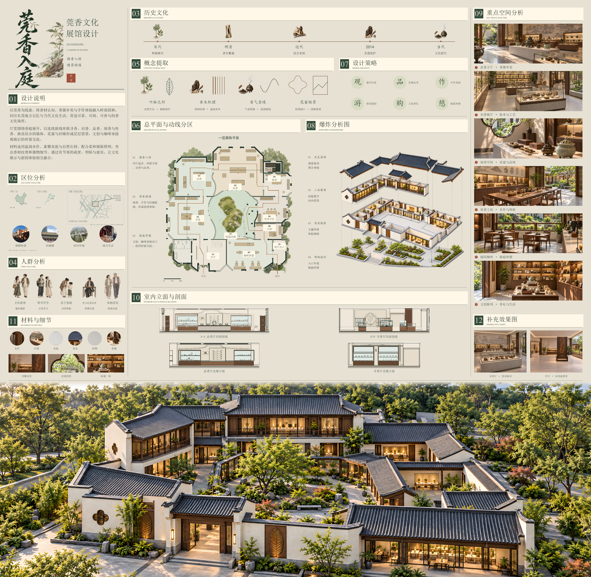

莞香入庭 · 毕设展板审核
毕设展板审核 · r85
莞香入庭，
循香游园。
按158×154厘米重新排版：左上题名与说明，中部总平面、爆炸分析和彩色立剖面，右侧集中室内效果图，底部通栏建筑外观。保留五类人群、实景区位、莞香文化与设计策略，透明排版素材同步更新。
宽158 × 高154厘米 · RGB sRGB
有效300ppi · 字体嵌入 · 四周3mm出血
PDF位图按实际尺寸达到有效300ppi，文字图纸保持矢量。沿用既有AI生成与增强图片。嵌入sRGB；印厂专用RGB配置尚未提供。
当前展板与项目成果
点击查看完整原图。